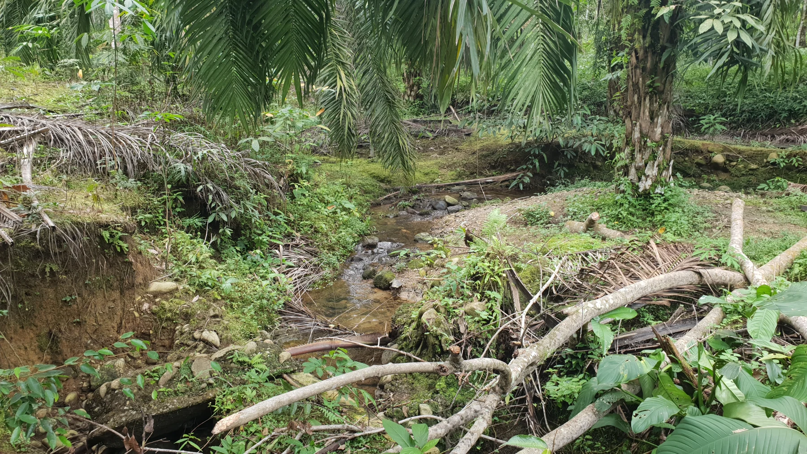
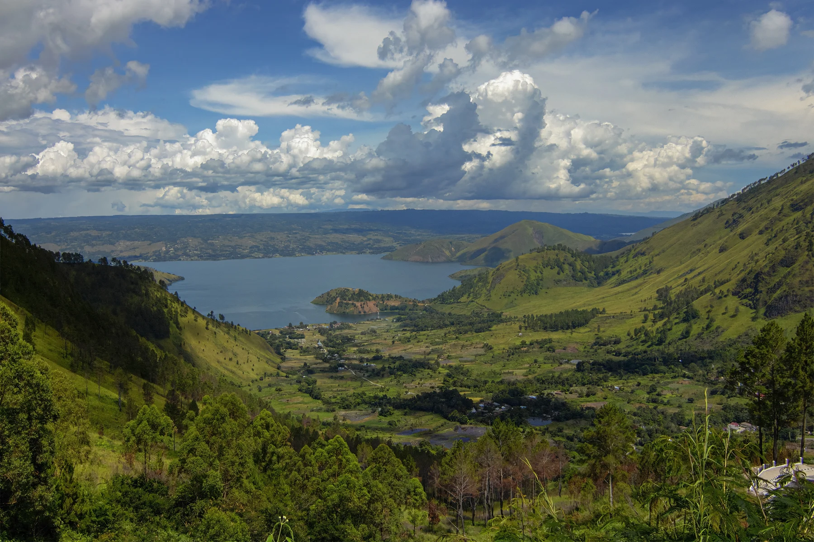

EN · English
ES · Español
DE · Deutsch
FR · Français
IT · Italiano
NL · Nederlands
PT · Português
Nº 01 · BUKIT LAWANG · 3.6°N 98.1°E
↗

CATATAN · 01 / BAHOROK
03.6° N
098.1° E
LIAR, DENGAN PETA.
↗
Nº 02 · EXPEDITIONS · 2026–27
€70
€120
€170
Sumatra Signature ↗
Discover Sumatra ↗
Following Orangutan Sumatra ↗
Nº 03 · LIAR, DENGAN PETA
01 /
02 /
03 /
Nº 04 · TRAVEL CALENDAR

CATATAN · 02 / DANAU TOBA
Nº 05 · FIELD NOTES
01 / LEUSER
02 / CATATAN
03 / CAMP
Nº 06 · TRAVELLER JOURNAL
Nº 07 · SELAMAT DATANG
WhatsApp · +34 615 788 239 ↗
↗
WhatsApp